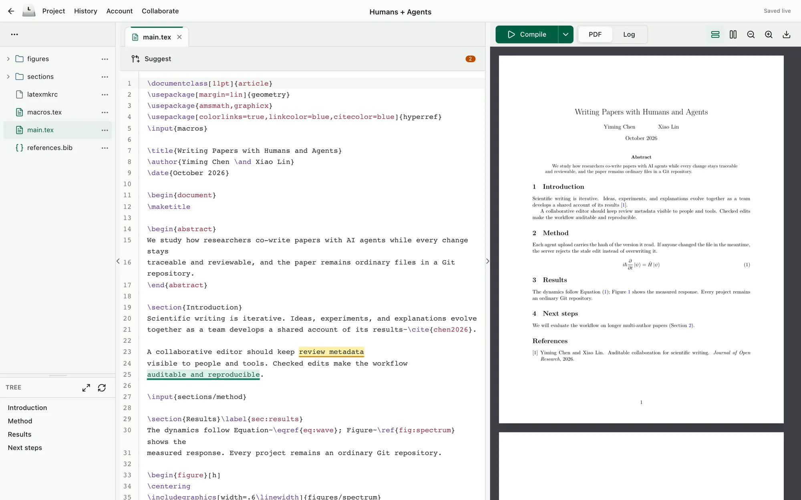
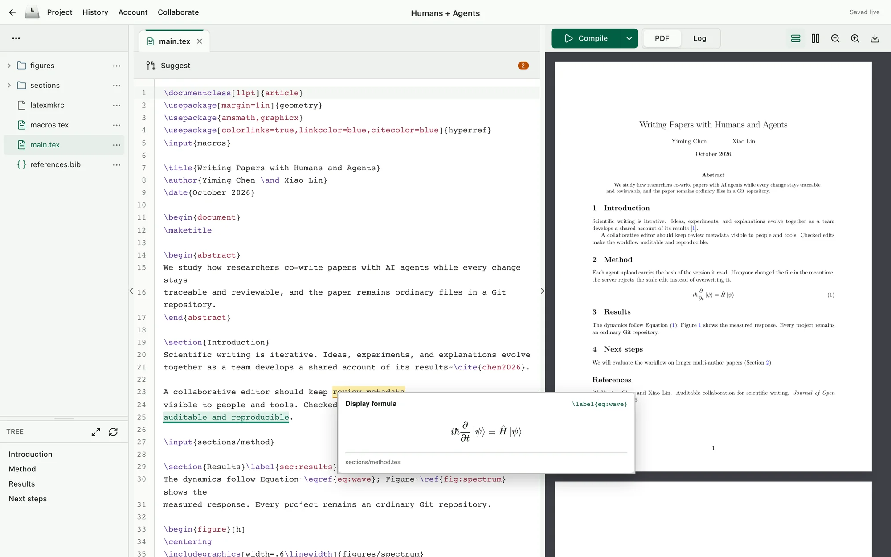
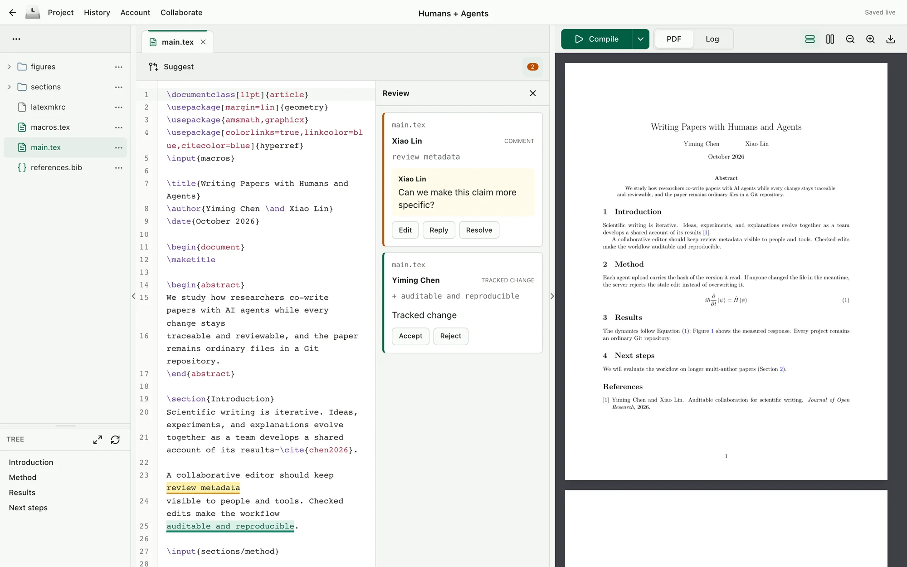
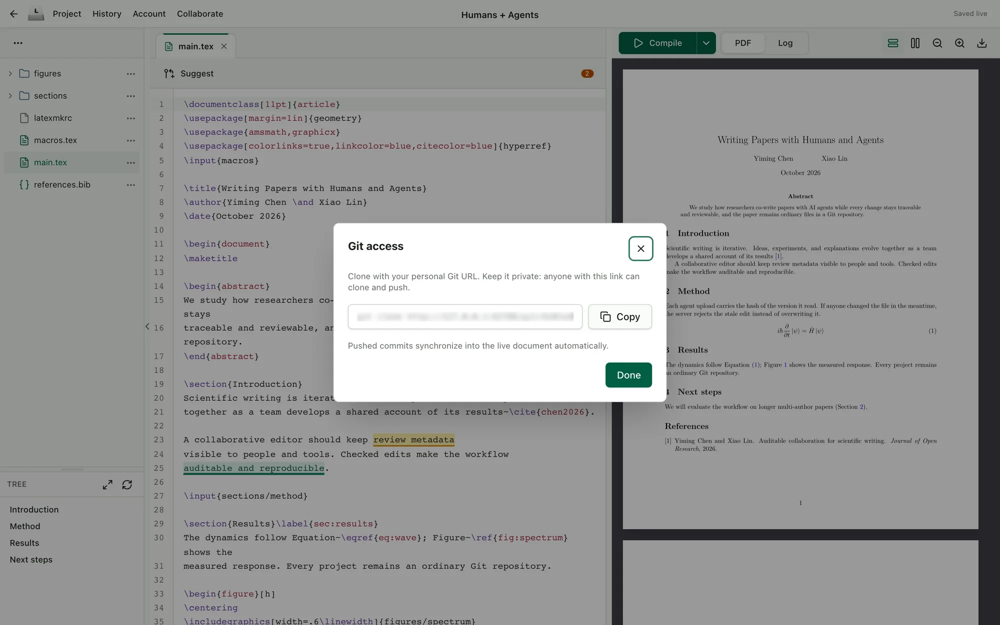

1On your lab’s own server 2Joined from a share link, no account 3Claude Code, Codex, or any shell agent
Abstract. LaTeX Coder is an open-source Overleaf clone collaborative LaTeX editor built for how papers are written now. Review lives in the source, every paper is a real Git repository, and coding agents edit the live paper without overwriting anyone. It runs on your server, free under the MIT license.
Keywords real-time collaboration · review in the source · a Git repository per paper · coding agents · guests without accounts · self-hosted

Figure 1. The workspace: file tree, LaTeX source with tracked suggestions, and the PDF preview, side by side.
Margin marks are illustrative.1
Not another Overleaf§1–2
1 How this started
We set out to clone Overleaf.
We wanted our research group to have its own Overleaf, on its own server. Halfway through, it was clear that a faithful clone would also copy everything that gets in a research team’s way. So we stopped copying and started fixing, one pitfall at a time. Table 1 lists what changed.
Table 1. What got in the way, and what we built instead.
What got in the way
What LaTeX Coder does
Review that a Git push can wipe out
Comments and suggestions are LaTeX macros in the source; they survive Git, ZIP exports, and agents.
A Git bridge that flattens history
A real Git repository per paper: clone over SSH, push, merge, restore. Conflicts land on their own branch.
Copy-pasting into a chat window
Coding agents edit the live paper, and can be limited to reviewable suggestions.
Collaborator limits and sign-up walls
View and edit links for guests, with no account and no seat count.
Unpublished work on someone else’s cloud
Plain files and Git repositories on your own volume. Leaving is a git clone.
Compile limits on the free tier
Full TeX Live and Tectonic on your hardware, with chapter-level builds for long theses.
2 Coding agents as coauthors
Copy one command from the Collaborate menu and hand it to Claude Code, Codex, or any shell agent. The agent receives a plain-text manual for this project — files, search, compilation, blame, review, and Git — and edits through a deliberately simple protocol.
Algorithm 1 Checked edit, as run by an agent
downloadf; h ← hash(f)
f′ ← edit(f) with ordinary local tools
upload (f′, h)
if the server’s hash of f ≠ hthen
reject — a coauthor edited meanwhile; re-read and retry
else apply f′ in one transaction
$ claude "Tighten the abstract in our LaTeX Coder paper"
● GET /files/main.tex 200
● Compile → 0 errors, 4 pages● PUT /files/main.tex base=9f3c…409 base changed— Mei is editing● Re-read, re-applied the edit● PUT /files/main.tex base=a71e… 200
✓ 2 suggestions added for review
Listing 1. An agent session in which a concurrent edit is detected rather than overwritten (illustrative).
Remark. Switch the agent to Propose and every change it makes arrives as a tracked suggestion that you accept or reject, exactly like a coauthor’s.
2
Not another Overleaf§3
3 The writing surface
Small things that add up to hours every week. We state them as results.
Proposition 1 (Hover to see it).Hovering a \ref or \eqref shows the equation or figure it points to, even from another file. Hovering a \cite shows the title and authors. ⌘-click jumps to the label, the BibTeX entry, or the included file.

Figure 2. An \eqref hover renders equation (3) from sections/method.tex.
Proposition 2 (Review lives in the source).Comments and suggestions are LaTeX macros, not rows in a hidden database. Humans, agents, and git diff all see the same review, and resolved threads keep their history.

Figure 3. A comment thread and a tracked suggestion, both stored in the .tex file.
Proposition 3 (Blame).Every character knows who wrote it — a person, an agent, or a Git commit — and links to the checkpoint that introduced it.
Figure 4. Blame mode in the editor.
Proposition 4 (One source of truth).The live document is main. A git pull always sees the latest text, and a push merges into what your coauthors are typing.

Figure 5. Clone any paper over SSH.
3.1 Further results
SyncTeX
both ways, source to PDF and back.
Chapter builds
compile only the chapter you are on.
Readable logs
jump to the first fatal error.
Citations
autocomplete with titles and authors.
Project search
regex, with previewed replace.
History
per-file diffs and one-click restore.
Phones
read the PDF and edit the source.
Interface
English, 中文, 日本語.
3
Not another Overleaf§4–6
4 Comparison with Overleaf
Table 2. LaTeX Coder and Overleaf, side by side.†
LaTeX Coder
Overleaf
Price
Free, MIT licensed
Free tier; key features on paid plans
Git
Real repository per project, SSH, merge on push
Git Bridge on paid plans, one linear branch
Review and Git
Review travels with the source
Pushing can displace comments and tracked changes
AI agents
Checked edit API, propose-only mode
No checked edit API for external agents
Guests
Link access, no account
Account-based, collaborator limits by plan
Hosting
Your server, or one click on Railway
Overleaf cloud, or separate on-premises products
† From Overleaf’s public documentation on plans and Git.
5 Deployment
Your lab’s own LaTeX editor, five minutes from now. One click on Railway, or Docker on any server. Full TeX Live installs itself on first start; Tectonic works while it does.
What has Overleaf never built for you? We leave this as an exercise for the reader: tell us, and the most requested features go to the top of our list.